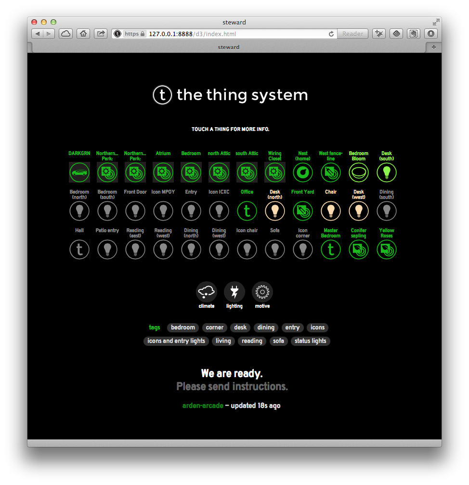
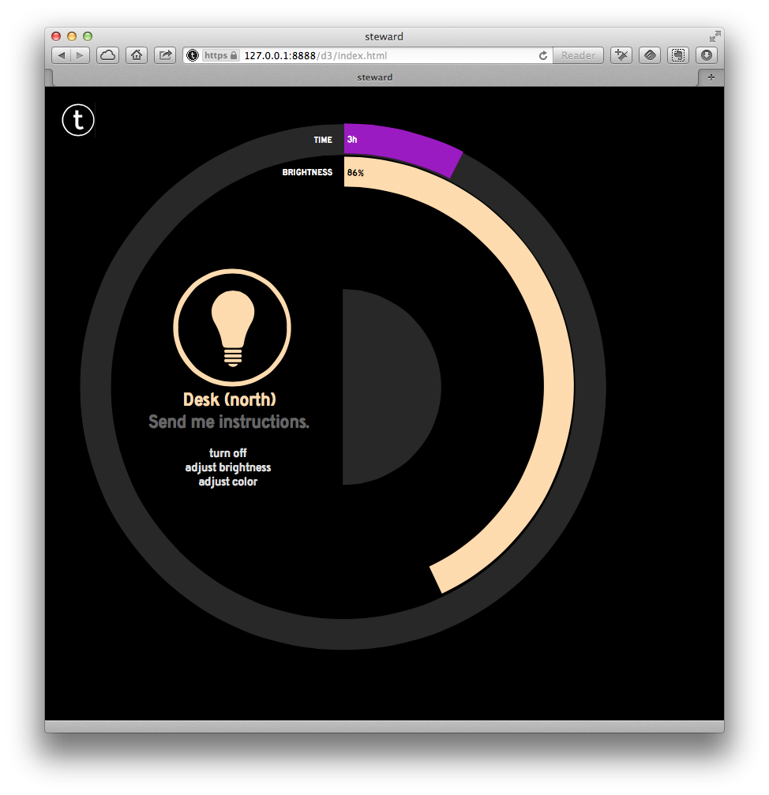
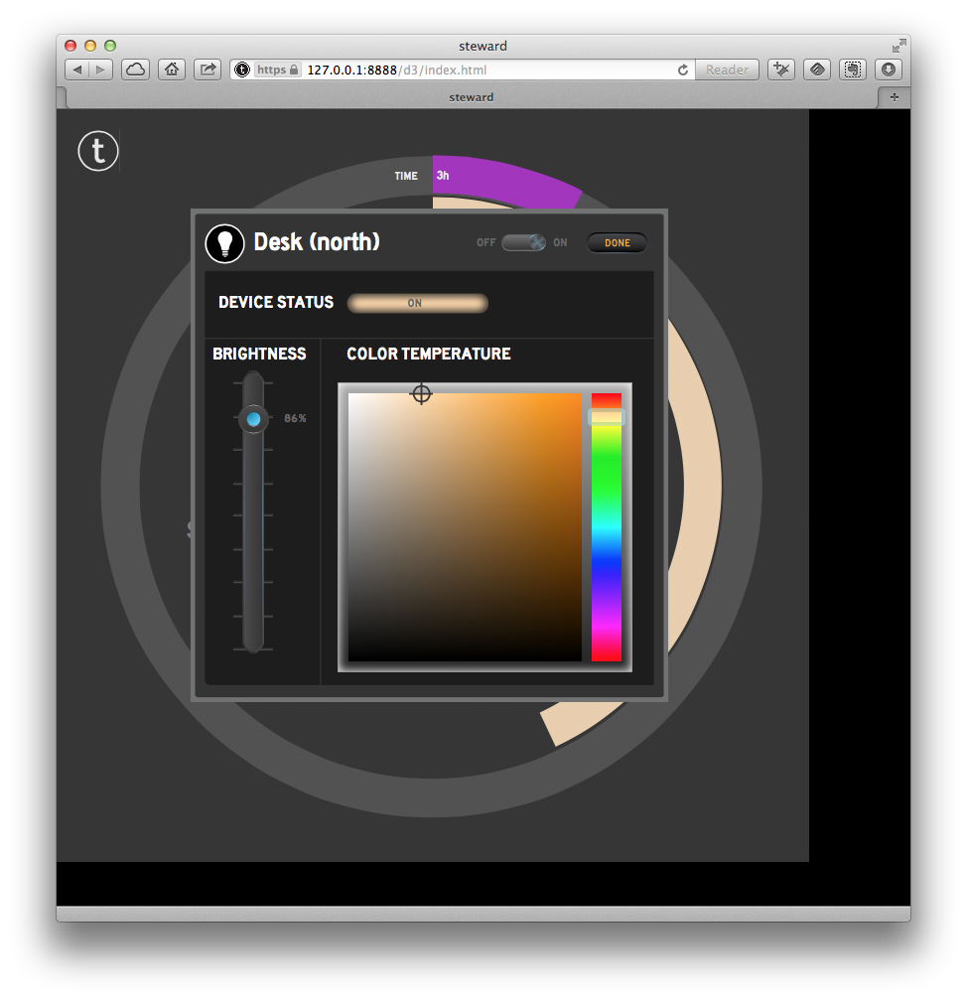
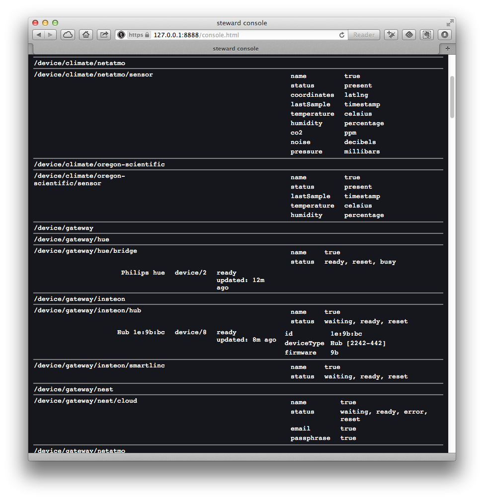

Instructions for starting the Steward
In the steward directory type
sudo ./run.sh
When the steward starts, it will automatically discover devices via a variety of mechanisms:
It will look on all attached networks for things via SSDP, TCP port scanning, and MAC address prefixes.
It will look for Bluetooth low energy things.
It will look for USB things.
The steward also needs your help. When the steward starts from scratch, it doesn't know it's physical location. In order to calculate solar events such as sunrise, it needs to know it's physical coordinates.
Normally, when the first client does a successful tap, it will ask you for permission to configure the steward with location and other information. However, the tap isn't implemented yet; so, at least for now, you will need to configure the steward using the d3 example client to create a "place" actor with this information.
What does the run.sh do?
The run.sh script does three things:
The script changes the group/permissions for /dev/bpf* and flushes the arp caches. The steward runs libpcap in order to examine arp traffic. On most systems, the Berkeley Packet Filter (bpf) is used by libpcap in order to capture network traffic. In turn, libpcap reads from devices named /dev/bpf* - so these files need to be readable by the steward. The run.sh script assumes that the steward is running under group admin, so that's what it changes the group to.
The script reads the nvm initialization script in order to set the environment for node.js.
The script runs the node program on the index.js file and the steward begins.
You will probably want to customize this script for yourself. When the script starts, it will bring a lot of stuff on the console. Over time, the verbosity will decrease, but for now, it should give comfort...
Authentication
The first time you start the steward you'll need to create a user account. Go to
https://steward.local:8888/client.html
and follow the instructions to create a user account. You can then use this to authenticate to the steward in future.
Monitoring
When the steward starts, it will be listening for https traffic on port 8888 and http traffic on 8887. If you are using the loopback interface (e.g., on a desktop system such as your Mac), then start by visiting
http://127.0.0.1:8887/
Otherwise, if you are using the LAN interface (e.g., on an embedded system such as your RPi), then start by visiting
https://steward.local:8888/
If warned about the certificate as being untrusted, please be sure to "permanently accept" the certificate as valid for the associated IP address
Regardless of whether you are using http to the loopback address, or https to the LAN address, you will be presented with the d3 example client.

NOTE: If you have Philips' Hue light bulbs, remember to push the pairing button on the hub at this point to advertise to allow the steward to talk to your light bulbs. You should also go ahead and dismiss the red popup along the top of the client.
NOTE: If you are not logged in to the steward on 127.0.0.1 (i.e. localhost) and instead you're logged on via the LAN you will initially be in read-only mode. You'll need to push the CHANGE LOGIN button at the top left to authenticate to the steward.
From here you can click on individual things, like for instance a light bulb, and be offered some basic controls,
 
to be clear the d3 client only exposes a small subset of the steward's abilities. You can take a more detailed look at what's going on by going to the console,
http://127.0.0.1:8887/console.html
or
https://steward.local:8888/console.html

where a full list of the available things and reports from them can be found.
For now at least if you want to control your things, you'll have to write your own clients or use the example clients provided.